2019 2018 2017 2016 2015 2014 2013 2012 2011 Before 2011 Researchgate
2020
Ling-Li Zhao, Hui-Yu Pan, Xin-Xiang Zhang and Ying-Lin Zhou. Analytica Chimica Acta, 2020, 1116, 62-69.
2. Dissolvable Polyacrylamide Beads for High‐Throughput Droplet DNA Barcoding
Yongcheng Wang, Ting Cao, Jina Ko, Yinan Shen, Will Zong, Kuanwei Sheng, Wenjian Cao, Sijie Sun, Liheng Cai, Ying-Lin Zhou, Xin-Xiang Zhang, Chenghang Zong, Ralph Weissleder and David Weitz. Advance Science, 2020, 7, 1903463.
Ling-Li Zhao, Xin-Xiang Zhang and Ying-Lin Zhou. Electroanalysis, 2020, 32, 1-8.
Qian-Yu Zhou, Li-Juan Wang, Ying Liu, Xin-Ying Zhong, Jia-Hui Dong, Ying-Lin Zhou and Xin-Xiang Zhang. Analytical Chemistry, 2020, 92, 15, 10620–10626.
5. The Exploration of a New Stable G-Triplex DNA and its Novel Function in Electrochemical Biosensing.
Ling-Li Zhao, Ting Cao, Qian-Yu Zhou, Xiao-Hui Zhang, Ying-Lin Zhou, Lijiang Yang and Xin-Xiang Zhang. Meeting Abstract, MA2020-01, 1924.
Ying Liu, Xiao-Hui Zhang, Yue Yu, Hong-Xu Chen, Ying-Lin Zhou and Xin-Xiang Zhang. Analyst, 2020, 145, 5027-5031.
2019
Enqi He, Liangyuan Cai, Fengyi Zheng, Qianyu Zhou, Dan Guo, Yinglin Zhou, Xinxiang Zhang and Zhihong Li. Scientific Reports, 2019, 9, 36.
Fang Yuan, Ying Bi, Jia-Yuan Zhang, Ying-Lin Zhou, Xin-Xiang Zhang and Chun-Xiao Song. RSC advances, 2019, 9, 29010-29014.
3. Ultrasensitive Determination of Rare Modified Cytosines Based on Novel Hydrazine Labeling Reagents.
Yue Yu, Fang Yuan, Xiao-Hui Zhang, Ming-Zhe Zhao, Ying-Lin Zhou, and Xin-Xiang Zhang. Analytical Chemistry, 2019, 91, 20, 13047–13053.
Qian-Yu Zhou, Xin-Ying Zhong, Ling-Li Zhao, Li-Juan Wang, Ying-Lin Zhou and Xin-Xiang Zhang. Analyst, 2019, 145, 172-176.
Yu-Fang Ma, Fang Yuan, Yue Yu, Ying-Lin Zhou, and Xin-Xiang Zhang. Analytical Chemistry, 2019, 92, 1, 1424–1430.
Fang Yuan, Yue Yu, Ying-Lin Zhou, and Xin-Xiang Zhang. Analytical Chemistry, 2019, 92, 1, 1605–1610.
7. DNAzyme-powered nucleic acid release from solid supports.
Ting Cao, Yongcheng Wang, Ye Tao, Lexiang Zhang, Ying-Lin Zhou, Xin-Xiang Zhang, John A. Heyman and David A. Weitz. Analytical Chemistry, 2019, 92, 1, 1605–1610.
Yue Yu, Si-Hao Zhu, Fang Yuan, Xiao-Hui Zhang, Yan-Ye Lu, Ying-Lin Zhou and Xin-Xiang Zhang. Chemical Communications, 2019, 55, 7595-7598.
9. The Exploration of a New Stable G-Triplex DNA and Its Novel Function in Electrochemical Biosensing.
Ling-Li Zhao, Ting Cao, Qian-Yu Zhou, Xiao-Hui Zhang, Ying-Lin Zhou, Li-Jiang Yang, Xin-Xiang Zhang. Analytical Chemistry, 2019, 91, 16, 10731-10737.
Fang Yuan, Ying Bi, Paulina Siejka-Zielinska, Ying-Lin Zhou, Xin-Xiang Zhang, Chun-Xiao Song. Chemical Communications, 2019, DOI: 10.1039/C9CC00274J.
Yu-Fang Ma, Li-Juan Wang, Ying-Lin Zhou, Xin-Xiang Zhang. Nanoscale, 2019, 11, 5526-5534.
12. A simple mix-and-read bacteria detection system based on a DNAzyme and a molecular beacon.
Ting Cao, Yong-Cheng Wang, Ling-Li Zhao, Ye Wang, Ye Tao, John A. Heyman, David A. Weitz, Ying-Lin Zhou, Xin-Xiang Zhang. Chemical Communications, 2019, 55, 7358-7361.
13. Highly sensitive determination of aminoglycoside residues in food by sheathless CE-ESI-MS/MS.
Yue Yu, Ying Liu, Wen-tao Wang, Yan-bo Jia, Gui-ping Zhao, Xin-xiang Zhang, Hong-xu Chen and Ying-lin Zhou. Analytical Methods, 2019, 11, 5064-5069.
2018
Qian-Yu Zhou, Fang Yuan, Xiao-Hui Zhang, Ying-Lin Zhou, Xin-Xiang Zhang. Chemical Science, 2018, DOI: 10.1039/C8SC00307F.
Xiao-Hui Zhang, Yan Deng, Ming-Zhe Zhao, Ying-Lin Zhou, Xin-Xiang Zhang. RSC Advances, 2018, 8, 4063-4071.
En-Qi He, Ting Cao, Liang-Yuan Cai, Dan Guo, Ying-Lin Zhou, Xin-Xiang Zhang, Zhi-Hong Li. RSC Advances, 2018, 8, 39561-39566.
2017
Ting Cao, Fang-Ting Zhang, Liang-Yuan Cai, Ying-Lin Zhou, Niklaas J. Buurma, Xin-Xiang Zhang. Analyst, 2017,142, 987-993.
En-Qi He, Liang-Yuan Cai, Dan Guo, Ying-Lin Zhou, Xin-Xiang Zhang, Zhi-Hong Li. IEEE, 2017, DOI: 10.1109/TRANSDUCERS.2017.7994004.
Yu-Fang Ma, Fang Yuan, Xiao-Hui Zhang, Ying-Lin Zhou, Xin-Xiang Zhang. Analyst, 2017, 142, 3212-3218.
Zheng-Wei Chen, Xue-Fei Zhong, Cai Tie, Bing-Ming Chen, Xin-Xiang Zhang, Ling-Jun Li. Analytical and Bioanalytical Chemistry, 2017, DOI: 10.1007/s00216-017-0387-6.
2016
1. Immobilization-free DNA-based homogeneous electrochemical biosensors
Fang-Ting Zhang, Liang-Yuan Cai, Ying-Lin Zhou, Xin-Xiang Zhang. Trends in Analytical Chemistry, 2016, 85, 17-32.
2. A cupric ion triggered DNA diode based on a tandem linkage–cleavage reaction
Ting Cao, Ji Nie, Liang-Yuan Cai, Xiao-Hui Zhang, De-Wen Zhang, Ying-Lin Zhou, Xin-Xiang Zhang. Chemical Communications, 2016, DOI: 10.1039/c6cc07293c.
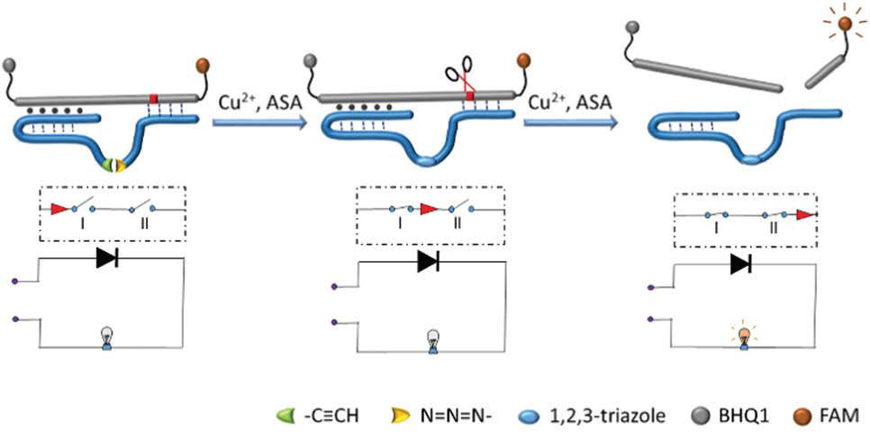
Fang Yuan, De-Wen Zhang, Jing-xin Liu, Ying-Lin Zhou, Xin-Xiang Zhang. Analyst, 2016,DOI: 10.1039/c6an01539e.
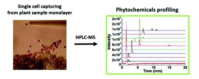
Fang Yuan, Xiao-Hui Zhang, Ji Nie, Hong-Xu Chen, Ying-Lin Zhou, Xin-Xiang Zhang. Chemical Communications, 2016, 52, 2698-2700.
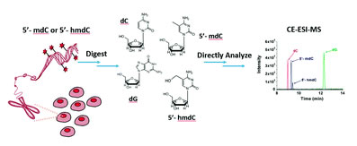
2015
Yi-Wei Zhang, Jian-Hui Zhu, Hai-Di Yin, Jorge Marrero, Xin-Xiang Zhang, David M Lubman. Journal of Proteome Research, 2015, 14, 5388-5395.
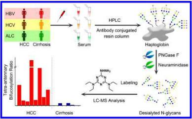
Ming-Zhe Zhao, Cai Tie, Yi-Wei Zhang, Yan Deng, Fang-Ting Zhang, Ying-Lin Zhou, Xin-Xiang Zhang. RSC Advances, 2015, 5, 79317-79322.
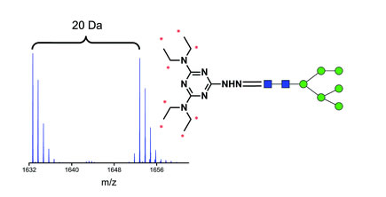
Ming-Zhe Zhao, Yi-Wei Zhang, Fang Yuan, Yan Deng, Jing-Xin Liu, Ying-Lin Zhou, Xin-Xiang Zhang. Talanta 2015, 144, 992-997.
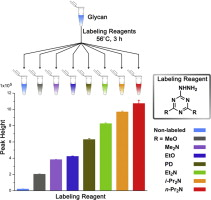
4. DNA Cross-Triggered Cascading Self-amplification Artificial Biochemical Circuit
Ji Nie, Ming-Zhe Zhao, Wen-Jun Xie, Liang-Yuan Cai, Ying-Lin Zhou, Xin-Xiang Zhang. Chemical Science 2015, 6, 1225-1229.
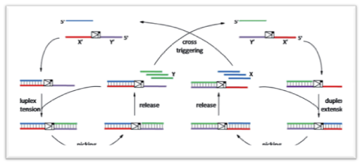
5. Portable, Easy-to-Operate, and Antifouling Microcapsule Array Chips Fabricated by 3D Ice Printing for Visual Target Detection
Hong-Ze Zhang, Fang-Ting Zhang, Xiao-Hui Zhang, Dong Huang,Ying-Lin Zhou, Zhi-Hong Li, Xin-Xiang Zhang. Analytical Chemistry 2015, 87, 6397−6402.
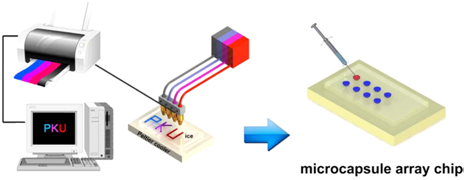
6. A smart tailor-made G-clip reporter for sensitive detection of G-triplet-containing sequences
Liang-Yuan Cai, Ji Nie, Yi-Wei Zhang, Fang-Ting Zhang, Ying-Lin Zhou, Xin-Xiang Zhang. Analyst 2015, 140, 3343-3346.
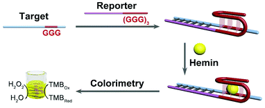
7. Double-layer Poly(vinyl alcohol) Coated Capillary for Highly Sensitive and Stable Capillary Electrophoresis and Capillary Electrophoresis with Mass Spectrometry Glycan Analysis
Yi-Wei Zhang, Ming-Zhe Zhao, Jing-Xin Liu, Ying-Lin Zhou, Xin-Xiang Zhang. Journal of Separation Science 2015, 38, 475-482.
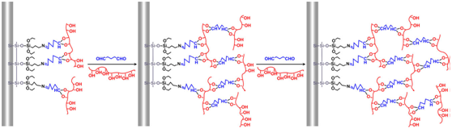
20141. Highly sensitive detection of five typical fluoroquinolones in low-fat milk by field-enhanced sample injection based CE in bubble cell capillary
Yan Deng, Natalia Gasilova, Liang Qiao, Ying-Lin Zhou, Xin-Xiang Zhang, Hubert H. Girault. Electrophoresis 2014, 35, 3355-3362.
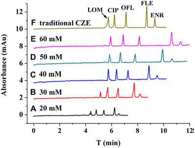
2. Differential detection of Rhizoma Coptidis by capillary electrophoresis -electrospray ionization-mass spectrometry with a nanospray interface
Jing-Xin Liu, Yi-Wei Zhang, Fang Yuan, Hong-Xu Chen, Xin-Xiang Zhang. Electrophoresis 2014, 35, 3258-3263.
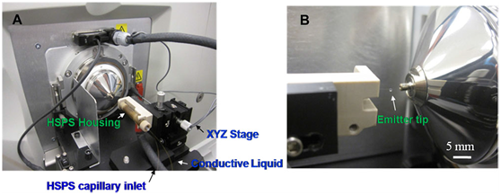
3. A G-quadruplex based platform for label-free monitoring of DNA reaction kinetics
Ji Nie, Liang-Yuan Cai, Fang-Ting Zhang, Ming-Zhe Zhao, Ying-Lin Zhou, Xin-Xiang Zhang. Analyst 2014, 139, 6542-6546.
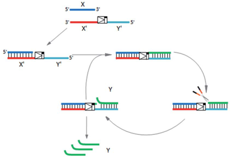
4. HPLC-MRM Relative Quantification Analysis of Fatty Acids Based on a Novel Derivatization Strategy
Cai Tie, Ting Hu, Xin-Xiang Zhang, Jiang Zhou, Jin-Lan Zhang. Analyst 2014, 139, 6154-6159.
5. Analysis of endogenous nucleotides by single cell capillary electrophoresis-mass spectrometry
Jing-Xin Liu, Jordan T Aerts, Stanislav S Rubakhin, Xin-Xiang Zhang, Jonathan V Sweedler. Analyst 2014, 139, 5835-5842.
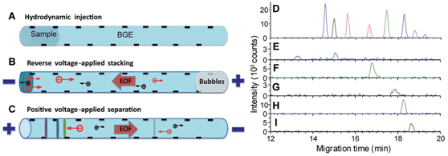
6. Methylene Blue as a G-Quadruplex Binding Probe for Label-Free Homogeneous Electrochemical Biosensing
Fang-Ting Zhang, Ji Nie, De-Wen Zhang, Ji-Tao Chen, Ying-Lin Zhou, Xin-Xiang Zhang. Analytical Chemistry 2014, 86, 9489−9495.
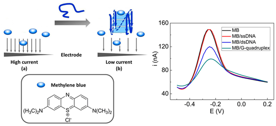
7. A facilely synthesized amino-functionalized metal-organic framework for highly specific and efficient enrichment of glycopeptides
Yi-Wei Zhang, Ze Li, Qiang Zhao, Ying-Lin Zhou, Hu-Wei Liu, Xin-Xiang Zhang. Chemical Communications 2014, 50, 11504-11506.
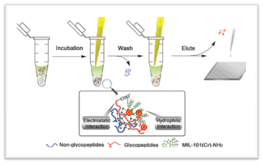
Ji Nie, De-Wen Zhang, Cai Tie, Ying-Lin Zhou, Xin-Xiang Zhang. Biosensors and Bioelectronics 2014, 56, 237-242.
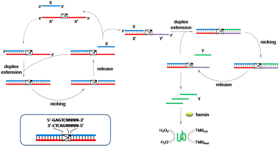
Yan Deng, Ji Nie, Xiao-Hui Zhang, Ming-Zhe Zhao, Ying-Lin Zhou, Xin-Xiang Zhang. Analyst 2014, 139, 3378-3383.

10. Reporter-triggered isothermal exponential amplification strategy in ultrasensitive homogeneous label-free electrochemical nucleic acid biosensing
Ji Nie, De-Wen Zhang, Fang-Ting Zhang, Fang Yuan, Ying-Lin Zhou, Xin-Xiang Zhang. Chemical Communications 2014, 50, 6211-6213.
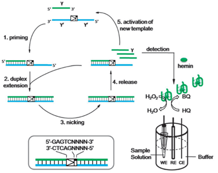
11. Layered double hydroxide-hemin nanocomposite as mimetic peroxidase and its application in sensing
Fang-Ting Zhang, Xia Long, De-Wen Zhang, Yi-Lun Sun, Ying-Lin Zhou, Yu-Rong Ma, Li-Min Qi, Xin-Xiang Zhang. Sensors and Actuators
B: Chemical 2014, 192, 150-156.
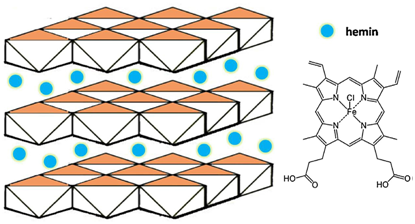
De-Wen Zhang, Ji Nie, Fang-Ting Zhang, Li Xu, Ying-Lin Zhou, Xin-Xiang Zhang. Analytical Chemistry 2013, 85, 9378-9382.
Ji Nie, De-Wen Zhang, Cai Tie, Ying-Lin Zhou, Xin-Xiang Zhang. Biosensors and Bioelectronics 2013, 49, 236-242.
3. The coating of smart pH-responsive polyelectrolyte brushes in capillary and its application in CE
Jing-Xin Liu, Ming-Zhe Zhao, Yan Deng, Cai Tie, Hong-Xu, Ying-Lin Chen, Ying-Lin Zhou, Xin-Xiang Zhang. Electrophoresis 2013, 34, 1352–1358.
4. A self-assemble aptamer fragment/target complex based high-throughput colorimetric aptasensor using enzyme linked aptamer assay
Ji Nie, Yan Deng, Qin-Pei Deng, De-Wen Zhang, Ying-Lin Zhou, Xin-Xiang Zhang. Talanta 2013, 106, 309-314.
De-Wen Zhang, Jing-Xin Liu, Ji Nie, Ying-Lin Zhou, Xin-Xiang Zhang. Analytical Chemistry 2013, 85, 2032-2036.
Hong-Xu Chen, Mu-Hua Huang, Xin-Xiang Zhang. Analytical Methods 2013, 5, 5019-5023.
Cai Tie, De-Wen Zhang, Hong-Xu Chen, Sen-Lin Song, Xin-Xiang Zhang. Journal of Mass Spectrometry 2012, 47, 1429-1434.
2. Cocaine detection by structure-switch aptamer-based capillary zone electrophoresis
Qin-Pei Deng, Cai Tie, Ying-Lin Zhou, Xin-Xiang Zhang. Electrophoresis 2012, 33, 1465-1470.
3. A label-free aptasensor for the sensitive and specific detection of cocaine using supramolecular aptamer fragments/target complex by electrochemical impedance spectroscopy
De-Wen Zhang, Fang-Ting Zhang, Yi-Ran Cui, Qin-Pei Deng, Steffi Krause, Ying-Lin Zhou, Xin-Xiang Zhang. Talanta 2012, 92, 65-71.
4. A new labelling reagent for glycans analysis by capillary electrophoresis-mass spectrometry
Cai Tie, Xin-Xiang Zhang. Analytical Methods 2012, 4, 357-359.
1. An electrochemical aptasensor based on enzyme linked aptamer assay
De-Wen Zhang, Cui-Jin Sun, Fang-Ting Zhang, Li Xu, Ying-Lin Zhou, Xin-Xiang Zhang. Biosensors and Bioelectronics 2012, 31, 363-368.
2. Synthesis of orientedly bioconjugated core/shell Fe3O4@Au magnetic nanoparticles for cell separation
Yi-Ran Cui, Chao Hong, Ying-Lin Zhou, Yue Li, Xiao-Ming Gao, Xin-Xiang Zhang. Talanta 2011, 85, 1246-1252.
3. Star-shaped polymers for DNA sequencing by capillary electrophoresis
Fan Gao, Cai Tie, Xin-Xiang Zhang, Zhi-Qiang Niu, Xiao-Jin He, Yu-Guo Ma. Journal of Chromatography A 2011, 1218, 3037-3041.
4. Amperometric hydrogen peroxide biosensor based on the immobilization of heme proteins on gold nanoparticles-bacteria cellulose nanofibers nanocomposite
Wei Wang, Tai-Ji Zhang, De-Wen Zhang, Hong-Yi Li, Yu-Rong Ma, Li-Min Qi, Ying-Lin Zhou, Xin-Xiang Zhang. Talanta 2011, 84, 71-77.
1. Li, H. Y.; Deng, Q.P.; Zhang, D. W.; Zhou, Y. L.; Zhang, X. X. . Electrophoresis 2010, 31, 2452.
2. Wang, W.; Li, H. Y.; Zhang, D. W.; Jiang, J.; Cui, Y. R.; Qiu, S.; Zhou, Y. L.; Zhang, X. X. Electrophoresis 2010, 22, 2543.
3. Xu, L.; Qiu, S.; Sun, C. J.; Deng, Q. P.; Chen, H. X.; Zhou, Y. L.; Zhang, X. X. J. Chromatogr. B 2010, 878, 1443.
4. Qiu, S.; Xu, L.; Cui, Y. R.; Deng, Q. P.; Wang, W.; Chen, H. X.; Zhang, X. X. Talanta 2010, 81, 819.
5. Li, H. Y.; Dauriac, V.; Thibert, V.; Senechal, H.; Peltre, G.; Zhang, X. X.; Descroix, S. Lab Chip 2010, 10, 2597.
6. Shen, J.; Wang, W.; Chen, Q.; Wang, M. S.; Xu, S. Y.; Zhou, Y. L.; Zhang, X. X. Nanotechnology 2009, 20, 245307.
7. Chen, H. X.; Deng, Q. P.; Zhang, L. W.; Zhang, X. X. Talanta 2009, 78, 464.
8. Chen, H. X.; Huang, T.; Zhang, X. X. Talanta 2009, 78, 259.
9. Chen, H. X.; Busnel, J. M.; Peltre, G.; Zhang, X. X.; Girault, H. H. Anal. Chem. 2008, 80, 9583.
10. Qi, X. H.; Zhang, L. W.; Zhang, X. X. Electrophoresis 2008, 29, 3398.
11. Chen, H. X.; Zhang, X. X. Electrophoresis 2008, 29, 3406.
12. Chen, H. X.; Busnel, J. M.; Gassner, A. L.; Peltre, G.; Zhang, X. X.; Girault, H. H. Electrophoresis 2008, 29, 3414.
13. Zhang, L. W.; Zhang, X. X.; Chemical Journal of Chinese Universities-Chinese 2008, 29, 694.
14. Zhang, L. W.; Wang, K.; Zhang, X. X.; Anal. Chim. Acta 2007, 603, 101.
15. Zhang, L. W.; Ding, L.; Zhang, X. X. Anal. Bioanal. Chem. 2007, 387, 2833.
16. Kang, J.; Zhang, X. Y.; Sun, L. D.; Zhang, X. X. Talanta 2007, 71, 1186.
17. Liu, S. W.; Zhang, L. W.; Zhang, X. X. Analytical Sciences 2006, 22, 1515.
18. Gao, H.; Lu, J. Y.; Cui, Y. R.; Zhang, X. X. J. Electroanal. Chem. 2006, 592, 88.